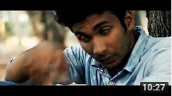
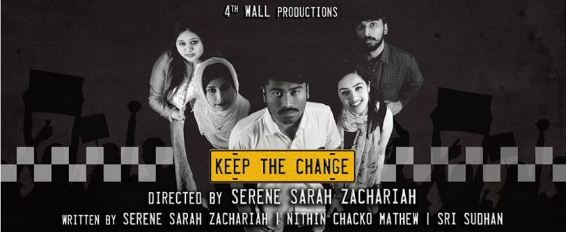

Nithin is a fun loving enthusiast for movies and has developed an interest for film criticism and film making. A passionate story teller who can convey a simple idea with spectacular energy and a captivating narrative which keeps the listener waiting for more. His interests also expand to the digital world, from being an avid gamer to being extremely skilled in videography and editing. He has even tried his hand at dance and theatre, bringing out amazing performances. Moreover, his life experiences has strengthened him to see humanity from a different perspective and his selfless dedication towards maintaining his relationships with people makes him the grounded person he is.
Tenth Grade
Plus-Two
BSc Visual Communication
M.A in Media and Communication Studies
Intern - Correspondent for Metroplus and City News
Intern - Media Manager
Metanoia is a devotional short film which shows how our lives and acts are connected with bible and how terrible can the after effects of bad things can go. 'Metanoia' is shot, edited and directed by me.
Magic of Makers tells the stories of certain talented and hard working people who does few extinct crafts in India such as Handloom Weaving, Stone Carving and Pottery Making. It has been shot in Kuthampully handloom village and nearby areas in Palakkad. 'Magic of Makers' is shot and edited by me.
Addiction can cause harms on us in various levels. What if the actions of us cause harms on others' lives? 'Side Effects' tells such a story of identical twins, who are two sides of a coin in nature. 'Side Effects' is shot, edited and directed by me.

“Keep the Change” directed by Serene Sarah Zachariah is a simple story of simple people with complicated problems. Set in a cab running through the streets of Bengaluru, the play epitomises the problems and conflicts of the middle class. I acted as driver Shankar, one of the lead roles in the play.
